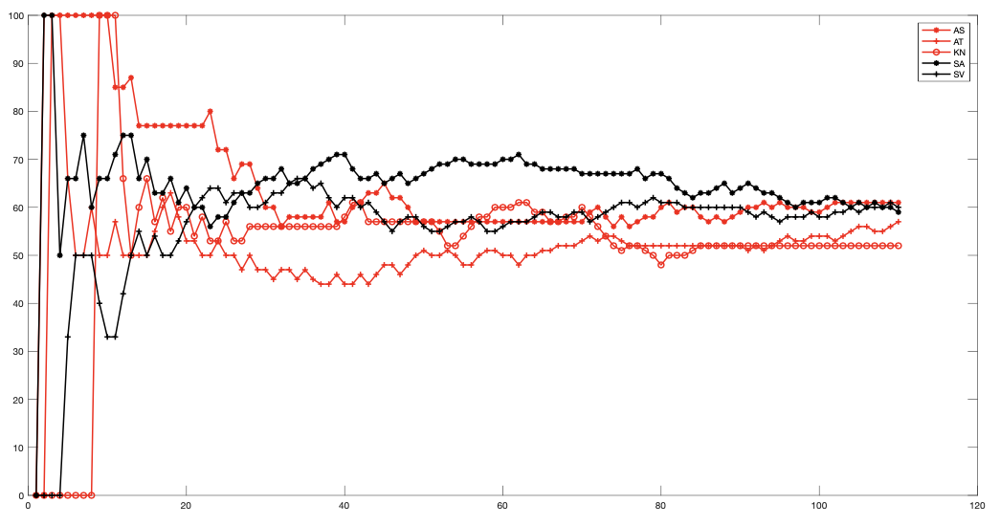
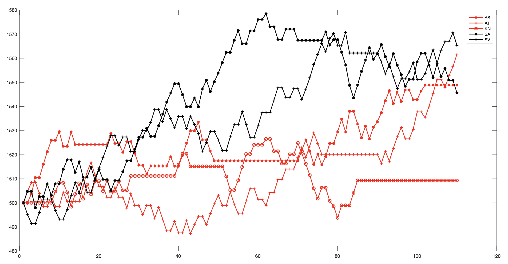

Badminton Data & Analytics
A quick jot down of stuff. Just getting started. Need to fix some parts of the code. More analytics will be added later!
| Win percentage |
Elo rating |
| 
| 
|
- Keeps track of badminton doubles data and has some analytics.
- Elo rating: Assigns elo rating for individual players. In general, the main point with elo rating is that it gives importance to the strength of the opposition. If one wins against a weaker opposition, they get lesser points. On the other side, if one wins against a stronger opposition, they get more points.
- Main idea is as follows. More details later.
- All individuals begin with an elo of 1500 (Why? GOK; Initial value doesn't matter; some baseline value).
- Team 1 (T1) consist of players P1 and P2; Team 2 (T2) consist of players P3 and P4.
- T1 elo is 0.5*(elo(P1)+elo(P2)) and T2 elo is 0.5*(elo(P1)+elo(P2)).
- Let's also assume that elo(T1)>elo(T2), i.e., T1 are the favourites to win.
- Assume the score of the losing team is 'D' points.
- The elochange is calculated as follows:
\[EL = K \exp(-\lvert elo(T1)-elo(T2) \rvert /a/K)(1-D/100)\]
- If T1 wins, then each member of T1 gets the above points added to their score and each member of T2 have the above points subtracted from their score.
- If T2 wins, then each member of T2 gets \((K(1-D/100)-EL)\) points added to their score and each member of T1 have the \((K(1-D/100)-EL)\) points subtracted from their score.
- Another feature of the above specific elo rating is that it also gives importance to the margin of victory via the factor \((1-D/100)\). If the losing team scores 0 points, then the swing factor (elochange) is higher. If the losing team scores \(20\) points, then the swing factor (elochange) is lower.
- Some things to note: